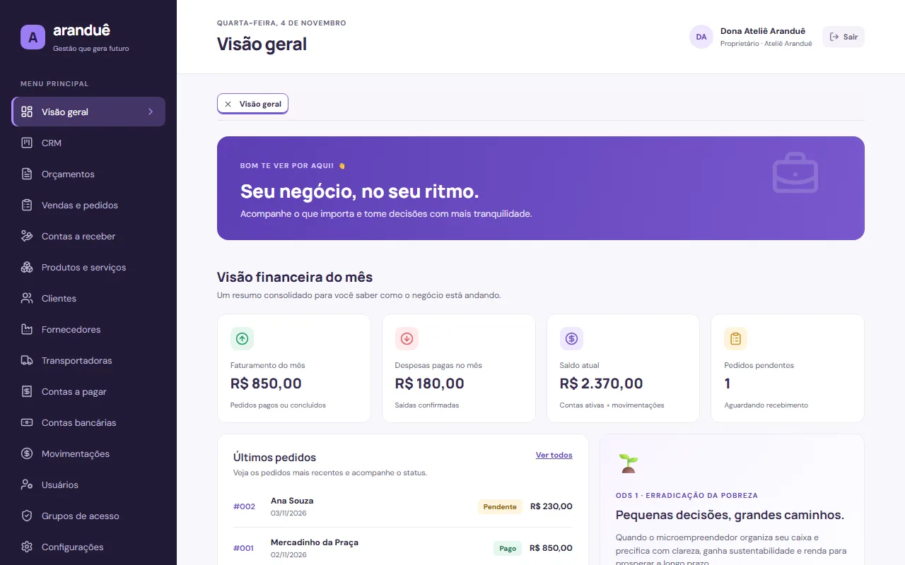
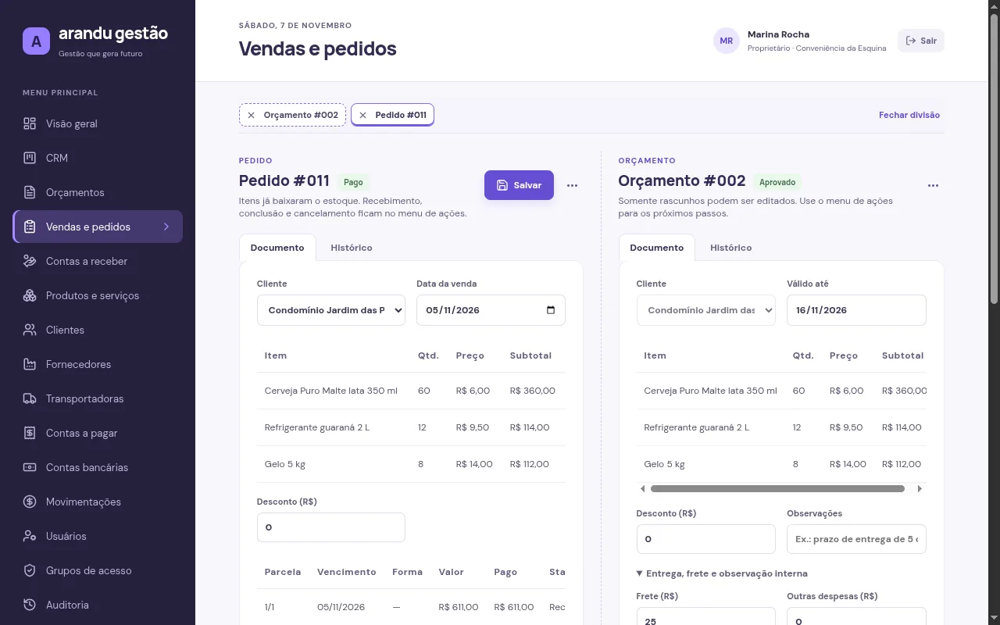
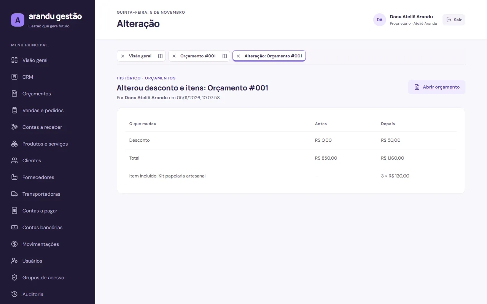
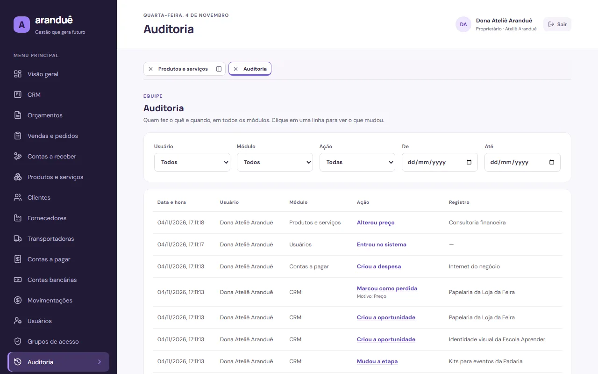
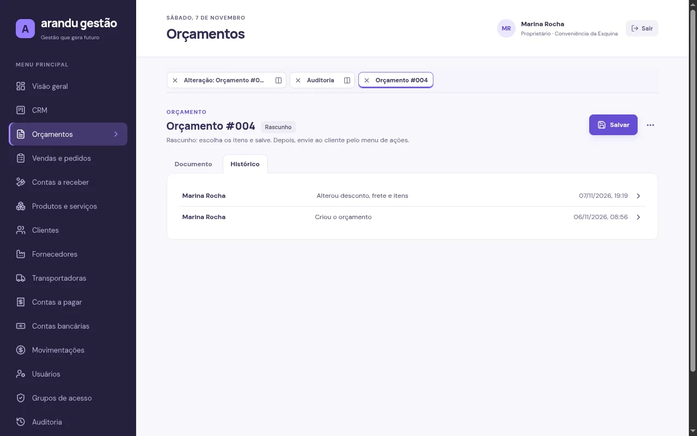
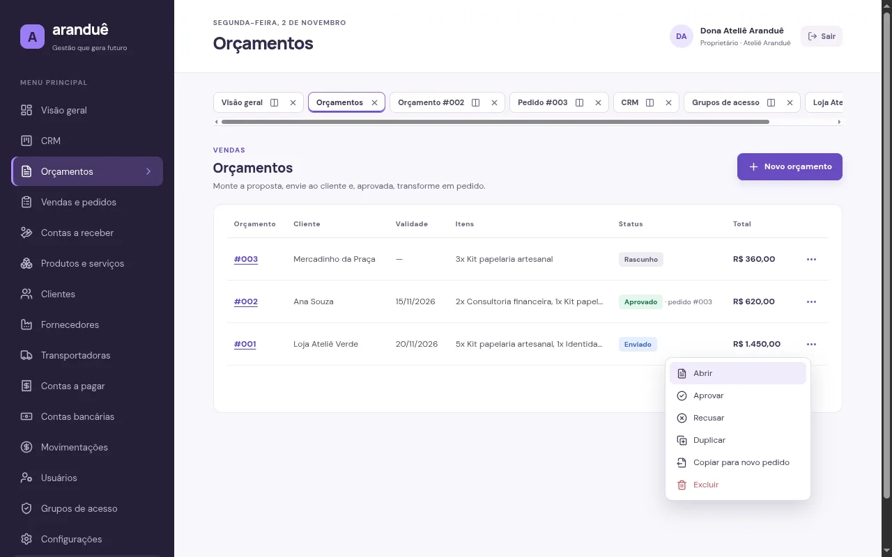
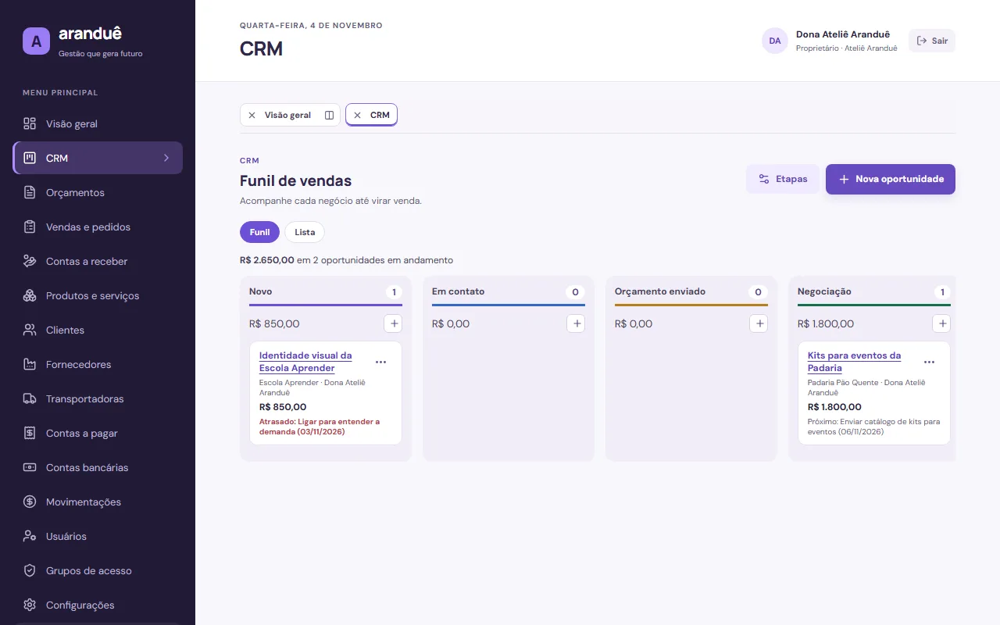
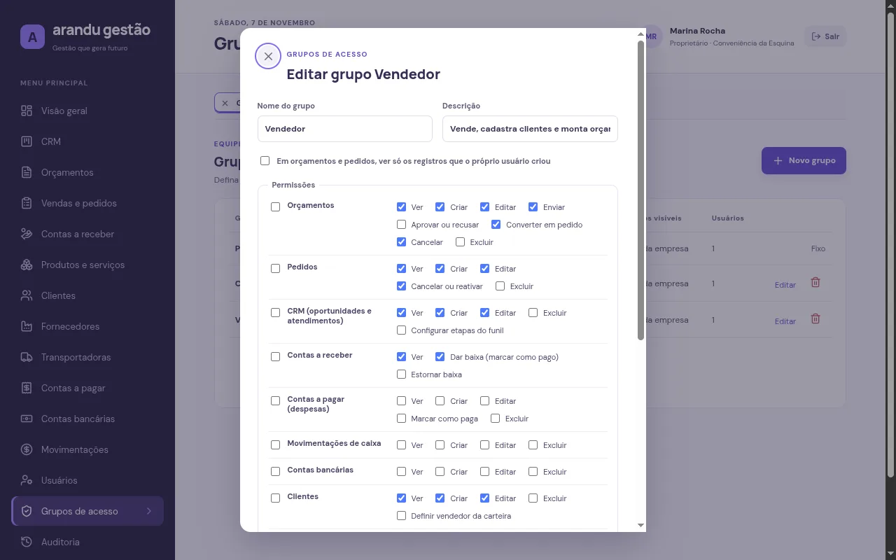
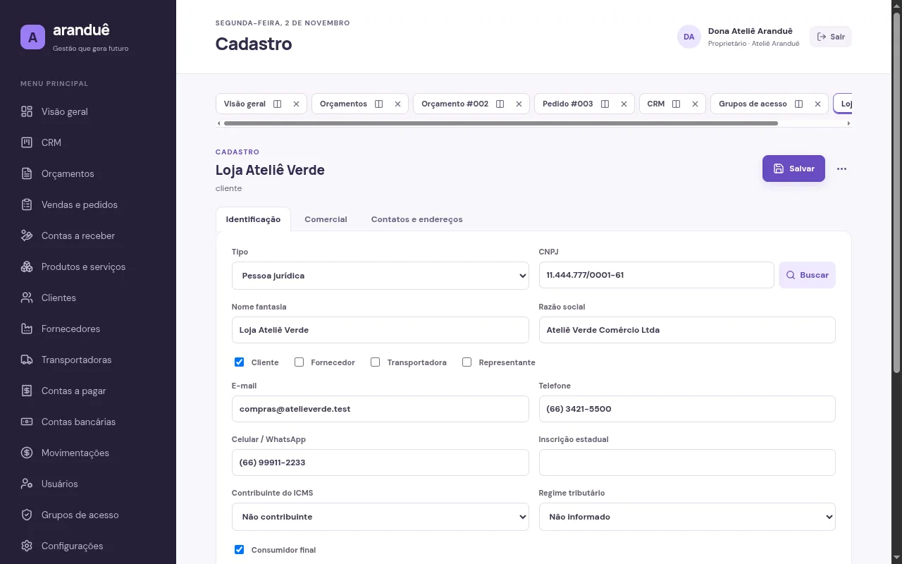
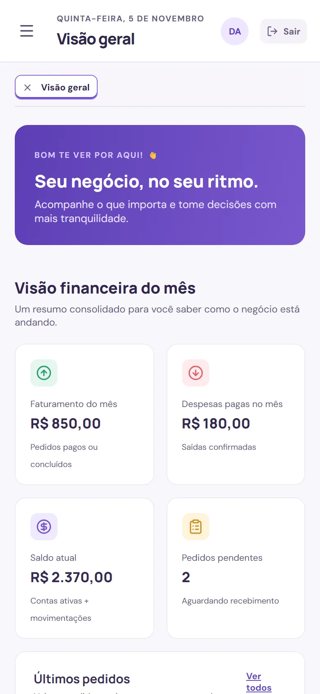

Telas










O problema
Muitos MEIs controlam vendas no caderno e o caixa de cabeça. Sem saber quanto entrou, quanto saiu e o que ainda falta receber, fica difícil precificar, planejar compras e crescer. O Aranduê reúne essas informações em uma interface pensada para quem não é da área de tecnologia, e acompanha o negócio quando ele ganha equipe.
O que já funciona
- Orçamento ao recebimento Orçamento enviado, aprovado e convertido em pedido; o estoque baixa e o recebimento entra no caixa.
- Permissões sob medida 53 permissões por ação em grupos de acesso. Um vendedor pode aprovar os próprios orçamentos enquanto só o financeiro dá baixa.
- Oportunidades e rastreio Funil configurável que avança sozinho com os documentos. Cada orçamento e pedido mostra de onde veio, e a oportunidade ganha vira cliente sem duplicar cadastro.
- Cadastro único Clientes, fornecedores e transportadoras num só cadastro, com CPF/CNPJ validados e busca de CNPJ e CEP.
- Área de trabalho com abas Cada tela aberta vira uma aba que guarda o que foi digitado; duas podem ficar lado a lado.
- Financeiro Contas a receber e a pagar, contas bancárias e caixa sincronizado com pedidos e despesas.
- Multiempresa Os dados de uma empresa nunca aparecem para outra; numeração de pedidos e orçamentos própria.
- Limite do MEI O faturamento do ano é comparado com o limite informado pela empresa.
- Histórico de alterações Em todos os módulos: quem fez, quando e o que mudou, com motivo obrigatório ao recusar ou cancelar. Documento excluído deixa o registro, e dados pessoais não ficam guardados nele.
Como foi construído
O backend concentra as regras de negócio em uma camada de serviços que verifica a permissão do grupo e a empresa em toda operação. Os mesmos schemas de validação e o mesmo catálogo de permissões são usados no navegador e no servidor. Cada ação do sistema é definida uma única vez e aparece onde faz sentido: listas, telas e, em breve, busca rápida e atalhos.
Segurança e qualidade
- 101testes automatizados de integração
- 20testes ponta a ponta no navegador
- 100em acessibilidade no Lighthouse (celular e desktop)
- ~119 KBde JavaScript inicial (gzip)
- Senhas com Argon2id e sessão em cookie seguro, revogada no logout.
- Proteção contra CSRF e limite de tentativas no login e nas consultas externas.
- Testes que garantem que uma empresa não acessa dados de outra e que ninguém concede permissões que não tem.
- Consultas de CNPJ e CEP feitas pelo servidor: só o número sai do sistema.
- Histórico protegido: CPF/CNPJ, e-mail, telefone, endereço e senha aparecem só como "alterado", sem guardar o valor.
Próximas versões
- Publicação: deploy em São Paulo e demo ao vivo nesta página.
- Produtividade: busca rápida, atalhos de teclado e filtros avançados.
- Documentos: orçamentos em seções, parcelas, espelho do cliente e espelho interno com margem, em PDF e DOCX.
- Gestão: assistente de precificação e painel com indicadores personalizáveis.
- Assistente de IA: chat de ajuda e bot no Telegram com confirmação antes de gravar.